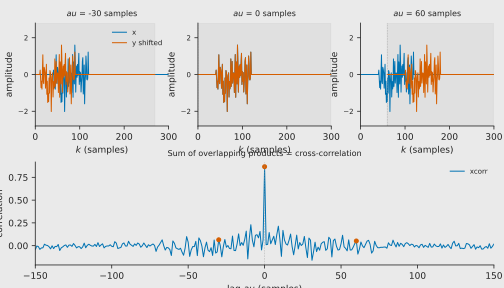
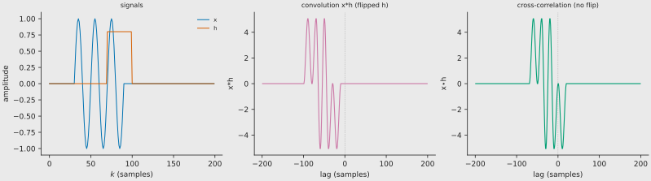
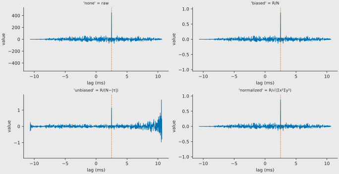

Cross-correlation
In signal processing, cross-correlation is a measure of similarity of two series as a function of the displacement of one relative to the other. It is the tool that turns a pair of audio waveforms into a single number — the delay — at every point in time.
Continuous definition¶
For continuous functions \(x(t)\) and \(y(t)\) the cross-correlation is
which is equivalent to
The bar denotes the complex conjugate (omitted for real signals). The lag \(\tau\) is the amount by which \(y\) must be shifted so that it best matches \(x\).
Discrete definition¶
For sampled signals of length \(N\)
In practice the sum runs over the overlapping samples only. This is exactly a sliding dot product: at each lag \(k\) the two signals are multiplied sample-by-sample and summed.

Top row: the test burst (blue) and the same burst shifted by \(-30\), \(0\), and \(+60\) samples (orange). Shaded regions mark the overlapping interval. Bottom row: the cross-correlation function. The value at each lag is the sum of products inside the overlap.
Properties¶
For real signals the cross-correlation satisfies three useful inequalities (all proven directly from the Cauchy–Schwarz inequality):
- Maximum at lag 0 (autocorrelation): \(\varphi_{xx}(0) = E_x\) (signal energy).
- Bounded: \(|\varphi_{xy}(\tau)| \le \sqrt{\varphi_{xx}(0)\,\varphi_{yy}(0)}\).
- Even symmetry (autocorrelation): \(\varphi_{xx}(-\tau) = \varphi_{xx}(\tau)\).
Wiener–Khinchin (deterministic form)¶
The autocorrelation and the energy density spectrum are a Fourier pair:
This is the bridge between "shape matching" in the time domain and spectral content in the frequency domain. For random (power) signals the same theorem holds with autocorrelation replaced by its time average and the energy spectrum replaced by the power spectral density (PSD).
Relation to convolution¶
Cross-correlation looks like convolution, but without flipping the second signal. The two operations are related by a time-reversal and conjugation:
If \(x\) is real the conjugate disappears and the relation simplifies to the time-reversal identity shown in the figure below.
In the frequency domain the point-wise spectrum multiplication carries the conjugate on the second factor:

Left: signals \(x\) (blue) and \(h\) (orange). Middle: convolution \(x*h\) with \(h\) flipped. Right: cross-correlation \(x \star h\) with \(h\) simply shifted. The peak location is different because the flip changes the sign of the lag.
Scaling options¶
Raw cross-correlation values depend on signal length and amplitude. Five
normalisation modes are supported — exactly the same set used by
elephant (scaleopt) and MATLAB (xcorr(..., scaleopt)):
| Mode | Symbolic form | Effect |
|---|---|---|
| none | — | Raw sum of products. Values grow with \(N\) and with signal power. |
| biased | \(R_{xy}[k] / N\) | Divides by the number of samples. Suppresses edge peaks but biases the estimate. |
| unbiased | $R_{xy}[k] / (N - | k |
| coeff | \(R_{xy}[k] / \sqrt{\Sigma_x \Sigma_y}\) | Normalises by the geometric mean of the energies so that the autocorrelation at lag 0 equals 1. |
| normalized | same as coeff | In xcorr_signals coeff and normalized share the
same implementation, matching elephant's treatment of the two keywords as synonyms. |
Verified against elephant source code (NeuralEnsemble/elephant,
signal_processing.py): elephant uses the identical formulas —biaseddivides by \(N\),unbiasedby \(N - |k|\), and bothcoeffandnormalizeddivide by \(\sqrt{(x^2_\mathrm{sum})(y^2_\mathrm{sum})}\). Both packages also z-score the inputs before correlation.

Top-left: raw values are ~500. Top-right: biased brings them to ~1. Bottom-left: unbiased keeps the centre at ~1 but magnifies noise at the edges. Bottom-right: normalized/coeff fixes the central peak at exactly 1.
Why the peak is the delay¶
If \(y[n] = x[n - k_0] + \text{noise}\), the cross-correlation satisfies
because the shifted copy aligns perfectly at \(\tau = k_0\). This is the principle behind every delay-estimation command in the CLI.
FFT computation and zero-padding¶
A naive \(O(N^2)\) sliding-dot-product sum is too slow for long audio. The FFT turns the operation into \(O(N \log N)\):
- Pad both signals to the next power of two \(\ge 2N - 1\).
- FFT both padded arrays.
- Multiply the first spectrum by the complex conjugate of the second.
- Inverse-FFT and remap the circular lags to a linear lag axis.
Zero-padding is essential. Without it the inverse FFT produces circular
cross-correlation, where the tail of one signal wraps around and corrupts the
beginning of the result. xcorr_signals pads automatically to the smallest
power of two \(\ge 2N - 1\) so the output is a true linear
cross-correlation.
References¶
- Wikipedia, Cross-correlation — https://en.wikipedia.org/wiki/Cross-correlation
- Wikipedia, Convolution — https://en.wikipedia.org/wiki/Convolution
- Hanus, R. (2019). Time delay estimation of random signals using cross-correlation with Hilbert Transform. Measurement, 144, 67–74. DOI 10.1016/j.measurement.2019.07.014
- NeuralEnsemble/elephant
cross_correlation_functionsource — https://github.com/NeuralEnsemble/elephant/blob/master/elephant/signal_processing.py